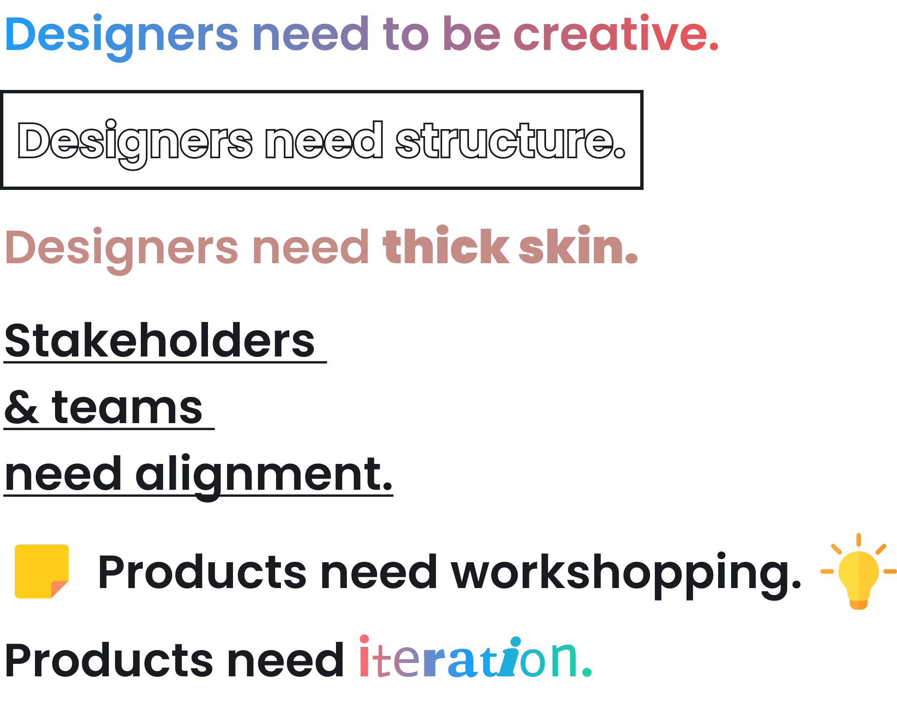

Design, Product & Leadership Philosophies
overview
My thoughts on team building, process creation, stakeholder alignment and product growth.
Good products need structure, they also need creativity. This push and pull is how a product goes from in development (with many delayed sprints haha) to growing, flourishing and keeping users satisfied. With this comes some hurdles, how does a business develop a team of designers? Are standards and patterns created? Do designers feel comfortable sharing new and creative ideas? Are designers developing thick skin when being peer reviewed? Is the ever so fragile relationship between design, product and engineering in rhythm? Does management’s vision align with the rest of the team ? I will elaborate on my philosophies on these topics below.

Processes and Team Building
In general I believe designers need structure and clear patterns. They also need to feel like they can be creative within product, engineering and business boundaries. These boundaries need to be kept top of mind, clear communication through working sessions and workshops keep all teams aligned.
Stakeholder Alignment
Design, product and engineering need to be on the same page as the key stakeholders, keeping both sides up to date without wasting either side’s time is important. Stakeholders have busy schedules, team members have busy schedules, workshop early and communicating on regular intervals helps smooth this issue.
Product Growth
Product growth and scaling is tricky, users opinions are fickle and the people building products can be defensive, this is normal for any step in the product lifecycle. User testing and research is integral, but often times ive seen products make huge pivots based on a few users opinions. Taking a holistic approach to feedback saves everyone time and removes constant rework. Design review (with clearly defined ways on how to give feedback) coupled with research and testing in a cyclic process leads to systematic improvements of a product.